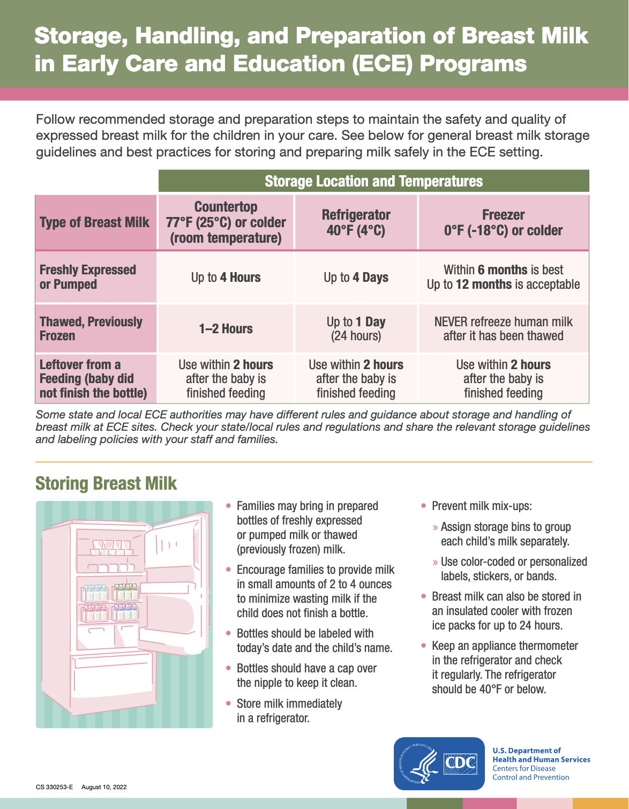
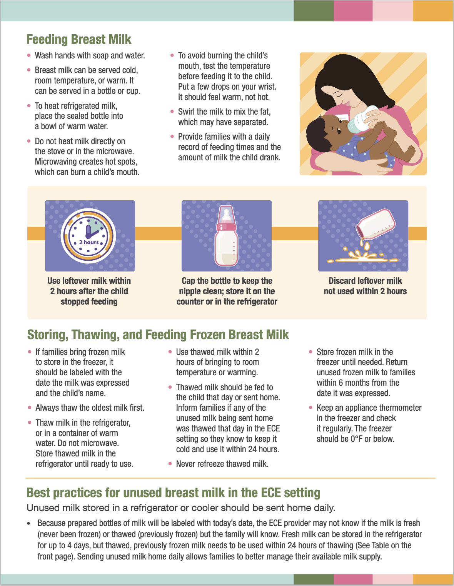

The Parents and Baby Book¶
Disclaimer
Nothing on this website should be considered medical advice. Always consult with a qualified healthcare professional for any concerns regarding your baby's health or development.
This is a collection of notes and resources for parents and caregivers of babies. It includes information on baby care, development, and parenting tips.
The goal is to provide food for thought and a starting point for further research, but we do our best to provide as much scientific research as possible.
The information is not exhaustive and should not be taken as medical advice. Always consult with a qualified healthcare professional for any concerns regarding your baby's health or development.
We live in Germany¶
The fact that we are living in Germany might influence the information and point of view in this book. Many of the topics we discuss will be focus on the situation in Germany, but we will try to provide information that is relevant to a wider audience as well.
Pregnancy ↵
Pregnancy¶
The pregnancy collection contains information about pregnancy, including the stages of pregnancy, prenatal care, and common pregnancy topics.
We will cover the following topics in this collection:
Midwife¶
In Germany, once you are pregnant, you need to find a midwife as soon as possible. A midwife is extremely helpful and important as he or she will accompany you throughout your pregnancy, birth, and postpartum period. In Germany, everything related to midwife is covered by your health insurance, so you do not have to pay for the midwife.
Find a midwife¶
It might be a bit difficult to find a midwife in Germany as there is a shortage of midwives. This is also why you need to start looking for a midwife as soon as you find out you are pregnant. You can search for a midwife in your area using the following resources.
Midwife in NRW
In NRW, there is a network you can use:
Search for and find a midwife near you - FAMILIENPORTAL.NRW
We live in Cologne and we found our English-speaking midwife using the following website:
Pregnancy Topics¶
Review of Discomforts During Pregnancy
D. C. Davis, “The discomforts of pregnancy,” J. Obstet. Gynecol. Neonatal Nurs., vol. 25, no. 1, pp. 73–81, Jan. 1996, doi: 10.1111/j.1552-6909.1996.tb02516.x. Available: http://dx.doi.org/10.1111/j.1552-6909.1996.tb02516.x. [Accessed: May 10, 2025]1
Article on Psychological Changes During Pregnancy
A. Carlin and Z. Alfirevic, “Physiological changes of pregnancy and monitoring,” Best Pract. Res. Clin. Obstet. Gynaecol., vol. 22, no. 5, pp. 801–823, Oct. 2008, doi: 10.1016/j.bpobgyn.2008.06.005. Available: http://dx.doi.org/10.1016/j.bpobgyn.2008.06.005. [Accessed: May 10, 2025]2
Weight¶
Weight Tracking
We use the Withings Body Smart scale to track weight gain during pregnancy.
Constipation¶
Zirkulin Bio Flohsamen Schalen is recommended by our gynecologist to help with constipation. It is also supported by research3.
Sleeping¶
A large fraction of pregnant women reported sleep disruption during pregnancy 4.
A Good Read
Won CHJ. Sleeping for Two: The Great Paradox of Sleep in Pregnancy. Journal of Clinical Sleep Medicine 2015. is a fun read.
Hypertension¶
Some pregnant women may experience hypertension 5.
{kind=link}
Table from Mustafa 2012 5.
Blood Pressure and Cardio Output Changes During Pregnancy
Blood pressure changes during pregnancy5.
{kind=link}
Figure from Mustafa et al 2012 5.
Other Research Topics¶
-
Davis DC. The discomforts of pregnancy. Journal of obstetric, gynecologic, and neonatal nursing : JOGNN 1996; 25: 73–81. ↩
-
Carlin A, Alfirevic Z. Physiological changes of pregnancy and monitoring. Best practice & research Clinical obstetrics & gynaecology 2008; 22: 801–823. ↩
-
Trottier M, Erebara A, Bozzo P. Treating constipation during pregnancy. Canadian family physician Medecin de famille canadien 2012; 58: 836–838. ↩
-
Won CHJ. Sleeping for two: The great paradox of sleep in pregnancy. Journal of clinical sleep medicine: JCSM: official publication of the American Academy of Sleep Medicine 2015; 11: 593–594. ↩
-
Mustafa R, Ahmed S, Gupta A, Venuto RC. A comprehensive review of hypertension in pregnancy. Journal of pregnancy 2012; 2012: 105918. ↩↩↩↩
Ended: Pregnancy
Giving Birth ↵
Giving Birth¶
At some point in your pregnancy, you will need to decide where you want to give birth.
We will focus on giving birth in a hospital as it was our choice.
Preparing for Labor¶
A few topics need to be addressed before you go into labor.
General Tips¶
Some General Tips
- Create a shared calendar for the baby and add dates to the calendar so that you and your partner can manage and see the events. We use Google Calendar.
- Create a shared cloud drive folder for the baby so that you and your partner can manage and access related documents together. We use Google Drive.
familienportal.de also provides a checklist
Work, leave, and parental allowance¶
Checklist for Work, Leave, and Parental Allowance
-
Inform your employer about your plans for maternity leave or parental leave.
Plan your parental leave with your partner. We recommend you check the parental allowance first before doing so.
- Confirm with your employer about the details of maternity leave or parental leave.
Elternzeit (Parental leave) in Germany
In Germany, the parental leave can be up to 3 years but rule apply12. Parents can take full hours off or do part-time work during parental leave.
See the following pages for more information:
- Familienleistungen. BMFSFJ. https://www.bmfsfj.de/bmfsfj/themen/familie/familienleistungen (accessed 8 May2025).
- Parental Leave. Handbook Germany : Together. https://handbookgermany.de/en/parental-leave (accessed 8 May2025).
Elterngeld (Parental allowance) in Germany
How much do you get?
A calculator:
Parental allowance calculator with planner. Federal family portal. https://familienportal.de/familienportal/meta/egr#/allgemeine-angaben (accessed 8 May2025).
Where to apply?
- On this webpage, you can find the office and relevant information related to your residential area: https://familienportal.de/familienportal/familienleistungen/elterngeld/faq
- Some of the links are not working, for example, the link to Cologne city website is wrong. For cologne, you can use the NRW website: https://www.familienportal.nrw/de/elterngeld
- Alternatively, there is this website: https://www.elterngeld-digital.de/ams/Elterngeld , however, Google Chrome can not translate the page automatically.
Hospital Checklist¶
There is no need to stress out about the hospital. Our experience with the hospital (St. Elisabeth-Krankenhaus Köln-Hohenlind) was very positive. The staff was very friendly and helpful. The whole process was so smooth that we didn't even need to worry about or thinking about what we need to do. The hospital staff always reminded us on the next steps. And they all speak English.
Checklist for Hospital
-
Contact and register with the hospital.
The hospital planned with us the dates and processes. Remember to write down these dates on your calendar.
-
Pack your hospital bag.
- Find a list that is suitable for your hospital. You can find ours below this checklist.
- Make sure you have all your important documents sorted out and reachable. This can help you speed up the process of getting into the hospital.
-
Find your way of keep track of baby activities. It can be pen and paper, or an app. Because you will need to track the feeding and diaper changes of your baby while in the hospital.
We use the Baby Daybook app.
- Birth registration.
-
Baby car seat.
We used the Bugaboo Fox 5 Kinderwagen 3 in 1 Set. It has a car seat that is very well designed.
-
Remember to take the Kinderuntersuchungsheft from the hospital.
What's in our hospital bag?
We packed the following in a suitcase. It was a correct decision because we had to move among different rooms in the hospital.
-
Clothes
-
Comfortable clothes for yourself
If you decide to breastfeed, pack some cloth that is soft and doesn't irritate your skin. See the section on Breastfeeding>Nipple Pain for more information.
-
Clothes for the baby
Apart from the normal clothes, pack something that can allow your baby to go outside. We had to take the baby to a different location for checkups so we needed a hat.
-
-
Bonding top
We used this Hoppediz Baby Bonding Top.
-
Toiletries
- Toothbrush, toothpaste, mouthwash, ...
- Shampoo etc
- Bathrobe, slippers, and towel
-
Water bottle that allows easy drinking when lying down.
We used this Klean Kanteen bottle.
-
Phone charger
-
Cash!
For us, we needed cash for the birth registration at the hospital. They didn't accept cards.
We packed our documents in a separate small bag since we still needed to use them before we went to the hospital.
- Important documents
- ID card
- Health insurance card
- Mutterpass
-
Parental Leave. Handbook Germany : Together. https://handbookgermany.de/en/parental-leave (accessed 8 May2025). ↩
-
Elternzeit. BMFSFJ. https://www.bmfsfj.de/bmfsfj/themen/familie/familienleistungen/elternzeit/elternzeit-73832 (accessed 8 May2025). ↩
Giving Birth in a Hospital¶
Call an Ambulance¶
Confirm with your gynecologist or midwife to see if and when you need to call an ambulance.
Family Room¶
Ask for a family room. Some hospitals can even convert normal rooms into family rooms (St. Elisabeth-Krankenhaus Köln-Hohenlind did this for us.).
Discharge¶
Hospitals in Germany usually discharge mothers and babies in a few days.
Birth Registration¶
Birth registration is simple if the baby is born in a hospital. For our case, St. Elisabeth-Krankenhaus Köln-Hohenlind has a counter in the hospital where you can register the birth.
Follow the following website for the latest information on the required documents:
Anmeldung Ihres Kindes beim Standesamt. Familienportal des Bundes. https://familienportal.de/familienportal/lebenslagen/schwangerschaft-geburt/anmeldung-standesamt (accessed 8 May2025).
Ended: Giving Birth
New Born ↵
New Born¶
It was quite confusing the first time I interacted with our new born.
Choose Your Tracking Method¶
We can't emphasize enough how important it is choose a convenient method to track your new born's activities. People may have great memories but it becomes really hard when we experience sleep deprivation.
Baby Daybook App
We use the Baby Daybook app. It is absolutely nailing the tracking of our new born's activities.
Sources of Information¶
Pathways.org
We find the website Pathways.org quite useful.
Topics¶
We will discuss a few topics here:
Feeding a New Born¶
Breastfeeding¶
There are a lot of advocates for Breastfeeding in Germany. You will meet these people at every stage of your pregnancy and after the birth of your child.
Communication and Support
Some of these advocates will push very hard and make you uncomfortable even suffer. However, most of time, they will offer you help by providing alternatives or different techniques to make it easier for you. Please remember to communicate clearly with them.
Apart from the close contact with your baby, breastfeeding of course provides Mother's Milk. On the other hand, there are methods to extract milk from your breast and processes to help your nipples heal.
Nipple Pain¶
The hospital provided us with a lotion called "HPA Lanolin".
Laser Treatment of Nipples
In some hospitals, for example, St. Elisabeth-Krankenhaus Köln-Hohenlind in Cologne, offer laser treatment for your nipples. This is a very good option if you have sore or cracked nipples.
If you are interested in the technical details of the laser treatment, you can read about it in the following article 1 2,
- K. P. Coca, K. O. Marcacine, M. A. Gamba, L. Corrêa, A. C. C. Aranha, and A. C. F. de V. Abrão, “Efficacy of low-level laser therapy in relieving nipple pain in breastfeeding women: A triple-blind, randomized, controlled trial,” Pain Manag. Nurs., vol. 17, no. 4, pp. 281–289, Aug. 2016, doi: 10.1016/j.pmn.2016.05.003. Available: http://dx.doi.org/10.1016/j.pmn.2016.05.003. [Accessed: May 04, 2025]
- H. Chung, T. Dai, S. K. Sharma, Y.-Y. Huang, J. D. Carroll, and M. R. Hamblin, “The nuts and bolts of low-level laser (light) therapy,” Ann. Biomed. Eng., vol. 40, no. 2, pp. 516–533, Feb. 2012, doi: 10.1007/s10439-011-0454-7. Available: https://doi.org/10.1007/s10439-011-0454-7.
Choose a Good Fabric for Your Clothes/Pajamas
Sometimes the Vienna breastfeeding donut doesn't help and made the nipple pain worse.
But we found some clothes made from some specific fabrics are comfortable for the nipples:
- Modal textiles.
The following are fabrics that we found is causes irritation to the nipples:
- Cotton.
Milk Extraction¶
In Germany, you can get a prescription for a breast pump and the insurance will pay for it.
The one we got from the prescription was the Medela Symphony Milk Pump.
Bottle Feeding¶
We use the Philips Avent Bottle for bottle feeding.
Washing bottles is a pain. Luckily Baby Brezza Bottle Washer Pro saved us a lot of time and effort.
Formula Milk¶
We also use formula milk. We have tried the following brands:
All are fine. We decided to go with the Neocate Infant because our hospital provided it and our baby liked it. Personally, we don't feel any difference between the three brands.
Research Papers¶
-
Cirico MOV, Shimoda GT, Silva IA, Sousa MVP de, Castro R de, McArthur A. Effectiveness of photobiomodulation therapy for nipple pain or nipple trauma in lactating women: A systematic review protocol. International Journal of Evidence-based Healthcare 2021. doi:10.11124/jbisrir-d-19-00371. ↩
-
Chung H, Dai T, Sharma SK, Huang Y-Y, Carroll JD, Hamblin MR. The nuts and bolts of low-level laser (light) therapy. Annals of Biomedical Engineering 2012. doi:10.1007/s10439-011-0454-7. ↩
Mother's Milk¶
Consumption of Mother's Milk¶
Infants usually consume about 0.5 kg/day of mother's milk for the first month and gradually grow to roughly 0.8 kg/day in the fourth month4.
Storing Mother's Milk¶
At room temperature (~ 25°C), up to 4 hours12. CDC provides a nice info-graphic for storing breast milk3.
|  |  |
{kind=link}
{kind=link}
-
CDC. Breast Milk Storage and Preparation. Breastfeeding. 2024.https://www.cdc.gov/breastfeeding/breast-milk-preparation-and-storage/handling-breastmilk.html#:~:text=Freshly%20expressed%20or%20pumped%20milk,to%2012%20months%20is%20acceptable. (accessed 9 May2025). ↩
-
Expressing and storing breast milk. nhs.uk. https://www.nhs.uk/baby/breastfeeding-and-bottle-feeding/breastfeeding/expressing-breast-milk/ (accessed 9 May2025). ↩
-
Centers for Disease Control and Prevention. Storage, Handling, and Preparation of Breast Milk in Early Care and Education (ECE) Programs. https://www.cdc.gov/obesity/strategies/early-care-education/pdf/Breastmilk-ECE-082022-508.pdf (accessed 9 May2025). ↩
-
Costa THM da, Haisma H, Wells JCK, Mander AP, Whitehead RG, Bluck LJC. How much human milk do infants consume? Data from 12 countries using a standardized stable isotope methodology. The journal of nutrition 2010; 140: 2227–2232. ↩
Changing Table¶
We converted a standing desk to a changing table. The idea is that we can adjust to our individual height so that we don't have to bend down too much. This is especially important for the back, as you will be changing diapers many times a day.
The following is our current setup (as of 2025-05-09):
{kind=link}
{kind=link}
Nappy Bin¶
We use this Chicco nappy bin for nappy disposal.
Formula Machine¶
We use the Baby Brezza Formula Pro Advanced to prepare formula milk.
Bottle Washer¶
We use the Baby Brezza Bottle Washer Pro to wash bottles.
Where do we put it
We have to put it in the kitchen due to limited space. Also we don't want to have any leakage on the parquet floor.
{kind=link}
Sleeping¶
Full term infants sleep about 70% of the time1.
Sleeping Stages and Categories¶
There are different sleep stages:
- Quiet sleep;
- Active sleep;
- Transitional Sleep.
{kind=link}
Table from Barbeau & Weiss 2017 1.
Durations of different sleep stages may vary. See the figure below for an example2.
{kind=link}
Figure from Scher et al. 2008 2.
20 Minutes Rule
An idea would be that we only put down the baby 20min if she/he falls asleep in our arms. This would be a safe bet that the baby is not in a transitional sleep stage. But I didn't find enough data to support this idea only the above EEG sample.
Sleeping Hours¶
There is not much sleeping length study for new born infants. We found a research paper Parmelee et al. 1964 that collected data of sleeping hours per day of 46 new born infants. The following tables and visualizations are based on their table 23. We observe a decrease in sleeping hours per day and an increase in the longest sleep duration. The trend is visualized below.
The following chart shows the average total daily sleep (hours) and the standard deviation (error bars) of the data.
The following chart shows the average daily longest sleep (hours) and the standard deviation (error bars) of the data.
The following chart shows the average daily longest wakefulness (hours) and the standard deviation (error bars) of the data.
| Age in weeks | Average total daily sleep (hours) | S.D. | Average daily longest sleep (hours) | S.D. | Average daily longest wakefulness (hours) | S.D. |
|---|---|---|---|---|---|---|
| 1 | 16.32 | 1.72 | 4.08 | 0.67 | 2.39 | 0.84 |
| 2 | 16.25 | 1.60 | 4.41 | 0.95 | 2.61 | 0.89 |
| 4 | 15.43 | 1.60 | 4.62 | 1.02 | 3.08 | 1.04 |
| 8 | 15.42 | 1.70 | 6.47 | 1.42 | 3.15 | 1.10 |
| 12 | 15.11 | 1.48 | 7.67 | 1.69 | 3.41 | 0.92 |
| 16 | 14.87 | 1.39 | 8.48 | 1.69 | 3.56 | 1.05 |
Apart from changes in the average hours of sleeping, the authors also found that the day sleep hours drops and night sleep hours increase with age 3. It is good news for parents who experiences sleep deprivation in the first few weeks.
Sleeping Positions¶
It is recommended to put the baby in the supine position when sleeping. However, there is a tendency for parents to be noncompliant with this recommendation through time4. It is a reminder to all of us to be vigilant.
Sleeping positions survey from Hauck et al. 2008 4
Infant Feeding Practice Study (IFPS)
CDC. Infant Feeding Practice Study (IFPS). Breastfeeding Data. 2025.https://www.cdc.gov/breastfeeding-data/studies/methods-results-ifps.html (accessed 10 May2025).
Co-Sleeping¶
There are pros and cons of co-sleeping5. The following table is a summary of the arguments mentioned in Sadeh et al. 2010:
| Aspect | Arguments For Co-Sleeping | Arguments Against Co-Sleeping |
|---|---|---|
| Nature and Needs | Most natural sleeping arrangement; best meets infant’s psycho-physiological needs | May hinder development of infant independence and autonomy |
| Breastfeeding | Facilitates breastfeeding | — |
| Emotional Development | Supports socio-emotional development through close caregiver contact | — |
| Safety | May protect against SIDS | Increases risk of death or accidents; safety concerns outweigh benefits |
| Sleep Quality | — | Associated with more sleep problems, especially night waking and bedtime struggles |
Parental Intervention¶
... excessive active physical comforting combined with reduced encouragement of infant’s autonomy was associated with infant sleeping problems.
— Sadeh et al. 2010 5
Research indicates that parents should encouraging independence and self-soothing to improve the sleep quality of the infant and also the wellbeing of the parents5.
Bed¶
We use this Maxi Cosi Iora Air bed for the baby. We move it to the living room during the day and to the bedroom at night.
{kind=link}
Evenings¶
Lights¶
We realized that our lights might be a bit too bright for the baby. So we dimmed all our ceiling lights and changed other lamps to warm or reddish color.
We use this Cotabaty Baby Night Light to check the baby during the night.
Further Reading¶
1 The sleep and sleep rhythm of babies in the 1st year of life. FAMILIENPORTAL.NRW. https://www.familienportal.nrw/en/0-bis-1-jahre/gesundheit-kind/sleeping. (accessed 10 May2025).
Research Papers¶
-
Barbeau DY, Weiss MD. Sleep disturbances in newborns. Children (Basel, Switzerland) 2017; 4. doi:10.3390/children4100090. ↩↩
-
Scher MS. Ontogeny of EEG-sleep from neonatal through infancy periods. Sleep medicine 2008; 9: 615–636. ↩↩
-
Parmelee AH Jr, Wenner WH, Schulz HR. Infant sleep patterns: From birth to 16 weeks of age. The journal of pediatrics 1964; 65: 576–582. ↩↩
-
Hauck FR, Signore C, Fein SB, Raju TNK. Infant sleeping arrangements and practices during the first year of life. Pediatrics 2008; 122 Suppl 2: S113–20. ↩↩
-
Sadeh A, Tikotzky L, Scher A. Parenting and infant sleep. Sleep medicine reviews 2010; 14: 89–96. ↩↩↩
Outdoor and Traveling¶
Bags¶
We use a Peak Design Tech Pouch to store baby stuff like milk bottle, diapers, wipes, etc.
Ended: New Born
Documents ↵
Documents¶
Kinderuntersuchungsheft¶
Also called the "yellow booklet" 1.
Charite has an English version of it2.
-
Das Gelbe Heft. kindergesundheit-info.de. https://www.kindergesundheit-info.de/themen/frueherkennung-u1-u9-und-j1/das-gelbe-heft/ (accessed 9 May2025). ↩
-
Meldung-Detail: Charité – Universitätsmedizin Berlin. Einladungs- und Rückmeldewesen zu den Kindervorsorgeuntersuchungen - Charité – Universitätsmedizin Berlin. https://kindervorsorge.charite.de/metas/meldung/artikel/detail/das_neue_kinderuntersuchungsheft_praktische_fragen_und_antworten (accessed 9 May2025). ↩
Ended: Documents
Product Catalog ↵
Catalog of Products¶
We record our experiences of using different products in this section.
If you have different experiences, please let us know. We will be happy to add your experiences to this section.
Softwares, Apps and Websites ↵
Google Calendar¶
We created a shared calendar on Google Calendar for the baby. Whenever there is something planned, we put it on the calendar, including the address if we need to visit somewhere.
Google Drive¶
We created a shared folder on Google Drive for the baby. We organize all the documents related to the baby in this folder. If there is a need, either of us can access the folder and find the documents.
Baby Daybook App¶
| Recommended | Where |
|---|---|
| Baby Daybook |
We are using the Baby Daybook app to track our baby's development. So far we really enjoy it.
We use it to track almost all activities of our baby. In the beginning, we thought it would be too much work, however, the app is very easy to use and we find it extremely helpful to keep track of things such as when we need to feed the baby again.
We purchased the premium version of the app because we use it a lot.
Backups and Data
I noticed that the backups are sqlite files. With a bit of effort, we can extract the data and transform the data into whatever we need.
Pathways.org¶
FREE, Easy-to-Use, and Trusted Resources on baby development, parenting, and early childhood education.
{kind=link}
They also have a great app.
Ended: Softwares, Apps and Websites
Feeding, Hygiene and Health ↵
HPA Lanolin from Lansinoh¶
| Recommended | Where |
|---|---|
| - |
"HPA Lanolin" is a product that the hospital provided us with to help with sore or cracked nipples.
Our experience is that it is useful.
Baby Brezza Formula Pro Advanced¶
| Recommended | Where |
|---|---|
| Official Website |
We use the Baby Brezza Formula Pro Advanced as to make supplemental formula for our baby. It is an absolute life saver.
{kind=link}
We got it from the official Baby Brezza website, but you can also find it on Amazon and other retailers.
We also recommend to get an extra Trichterset:
{kind=link}
Baby Brezza Bottle Washer Pro¶
| Recommended | Where |
|---|---|
| Official Website: Baby Brezza Bottle Washer Pro |
For washing baby bottles, we use the Baby Brezza Bottle Washer Pro. Absolutely worth the money.
{kind=link}
Philips Avent Natural Baby Bottle¶
| Recommended | Where |
|---|---|
| DM Drogerie, Amazon |
Our midwife recommended the Philips Avent Natural Baby Bottle. We use it for both breast milk and formula. It is easy to clean and has a wide neck for easy filling.
Our midwife recommended the nipple with the size 1 hole. But we could not find it in DM Supermarket. So we had to buy from Amazon.
Medela Symphony Milk Pump¶
| Recommended | Where |
|---|---|
| Rented based on Prescription |
We were prescribed the Medela Symphony Milk Pump.
{kind=link}
Neocate Infant¶
| Recommended | Where |
|---|---|
| Apotheke |
Official website: Neocate Infant.
St. Elisabeth-Krankenhaus Köln-Hohenlind provided us with this formula milk before we were discharged from the hospital. They said it reduces the risk of allergies.
{kind=link}
Vienna Breastfeeding Donut¶
| Recommended | Where |
|---|---|
| Hospital |
A Vienna Breastfeeding Donut is help relieve the pain of sore or cracked nipples.
{kind=link}
It can be purchased but also here is a manual to make it yourself using bandage and nursing pads: Vienna Breastfeeding Donut.
Nobamed Pflegetuch¶
| Recommended | Where |
|---|---|
| nobamed website |
The hospital that admitted us uses wipes from nobamed to clean the diaper area of our baby. We found it easy to use in the hospital so we purchased some for home use.
We purchased them directly from the nobamed website.
{kind=link}
PoeticEHome Soft Dry Wipes¶
| Recommended | Where |
|---|---|
| Amazon |
We use PoeticEHome Soft Dry Wipes to clean the diaper area of our baby. It is handy and soft. We find that Nobamed Pflegetuch is a bit rougher and sometimes too large.
{kind=link}
Chicco Nappy Bin¶
| Recommended | Where |
|---|---|
| Amazon |
We use this Chicco nappy pail Odor OFF, odor-proof system, conventional bags can be used, silver for nappy disposal.
{kind=link}
The only thing is that we need to fold the nappy a bit for it to fall into the bin smoothly.
IKEA Standing Desk¶
| Recommended | Where |
|---|---|
| IKEA |
We use the IKEA Mittzon Desk Sit/Stand Electric as a changing table. It relieves us from bending down too much and reduced our back pain.
Withings Thermo¶
| Recommended | Where |
|---|---|
| Withings Official |
We did three tests and the Withings Thermo is consistent with the midwife's thermometer. Of course it is much more comfortable and easier to use this than the invasive methods being used by midwives.
{kind=link}
Withings Body Smart¶
| Recommended | Where |
|---|---|
| Withings Official |
Ended: Feeding, Hygiene and Health
Mobility ↵
Boba Baby Wrap¶
| Recommended | Where |
|---|---|
| Amazon |
{kind=link}
We got it on Amazon.
Bugaboo Fox 5 Kinderwagen 3 in 1 Set¶
| Recommended | Where |
|---|---|
| official website |
We use the Bugaboo Fox 5 series. It has a stroller set and a car seat.
{kind=link}
We purchased it at their official website.
Their car seat has a lot of padding and a shade to protect the baby from the sun. We really love it.
The stroller is also very flexible. It has large wheels so the bobbing is reduced on uneven surfaces.
Ergobaby Omni Deluxe All-in-One¶
| Recommended | Where |
|---|---|
| Amazon |
We got the Ergobaby Omni Deluxe All-in-One from amazon.
{kind=link}
Peak Design Tech Pouch¶
| Recommended | Where |
|---|---|
| Amazon |
{kind=link}
On Amazon
Ended: Mobility
Other ↵
Klean Kanteen Water Bottle¶
| Recommended | Where |
|---|---|
| Amazon |
On Amazon.de:
{kind=link}
It was one of the most useful items in our hospital bag. One can drink from it while lying down. We used it even after we were discharged from the hospital.
Bonding Top¶
| Recommended | Where |
|---|---|
| Amazon |
Bonding top was one of the most useful items in our hospital bag. The hospital we visited also provides bonding tops.
We bought this Hoppediz Baby Bonding Top for Birth, Sectio and Postpartum, Organic Quality, Sage M from Amazon.
{kind=link}
Cotabaty Baby Night Light¶
| Recommended | Where |
|---|---|
| Amazon |
It has a nice warm light and is very easy to use: flip to turn on/off. It is also dimmable.
We got it on Amazon.
Stokke Tripp Trapp High Chair¶
| Recommended | Where |
|---|---|
| Stokke Official Website |
We find the Stokke Tripp Trapp high chair very useful. We bought the newborn set and we found the baby like to poop whiile lying on the chair. So we use it as a way to signal our baby to poop.
Zirkulin Bio Flohsamen Schalen¶
| Recommended | Where |
|---|---|
| DM Drogerie |
It is recommended by our gynecologist to take this product to help with constipation.
{kind=link}
Maxi Cosi Iora Air¶
| Recommended | Where |
|---|---|
| Babyone |
Pros:
- Easy to move around.
- Good storage space below the bed.
- Mesh sides for good air circulation and view of the baby.
Cons:
- Shaky when put my full body weight on the side.
Ended: Other
Ended: Product Catalog
Facilities ↵
St. Elisabeth-Krankenhaus Köln-Hohenlind¶
St. Elisabeth-Krankenhaus Köln-Hohenlind is a quite friendly hospital located in Koeln.
Ended: Facilities
About ↵
Roadmap¶
Growing Document¶
We treat this as a living document. As we learn more about our baby, we will update this document.
Keep Our Edit History¶
See the change history overview in Changelog. The detailed change history is in the GitHub repository.
References¶
Changelog¶
2025-05-04¶
- Added more contents in roadmap.
Tags¶
Following is a list of tags:
meta/tags.md:38-60/name¶
Supplementary Materials¶
In this part, we showcase some supplementary materials such as jupyter notebooks.